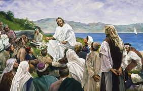

(A) Teaching a Friend with Scriptures and Talk
1. Who did you engage? - I taught my friend and shared the scriptures below and the talk "Coming Unto Christ." Mosiah 5:7-8
(B) Sharing
2. What did you share? - I shared key scriptures from the Book of Mormon, including Mosiah 5:7-8, Alma 7:11-14, and Moroni 10:30-33, along with insights from the "Coming Unto Christ" talk. I emphasized the importance of coming unto Christ, repentance, and faith in Jesus Christ. Alma 7:11-14 
3. Share the highlight from your teaching experience. - The highlight was that my friend was excited and willing to start being taught by the full-time missionaries to learn more about the gospel of Jesus Christ. Moroni 10:30-34
4. Share the highlight from your teaching experience. - The highlight was that my friend was excited and willing to start being taught by the full-time missionaries to learn more about the gospel of Jesus Christ. Coming Unto Christ
5. How did you feel through the experience? - I felt happy about my noble apostolic work or service of missionary work. Visit Example.com
6. What reaction or feedback did you receive? - The reaction was one of joy and hope.
.jpg)
And again I would exhort you that ye would come unto Christ, and lay hold upon every good gift, and touch not the evil gift, nor the unclean thing.
Moroni 10: 30